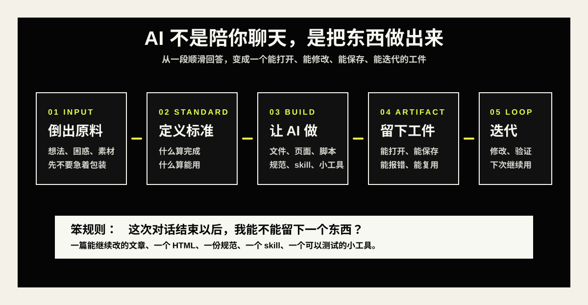

AI 不是陪你聊天的，是帮你把东西做出来的
很多人用 AI 的方式，还是太像在找一个聪明人聊天。聊完以后，话变漂亮了，想法变顺了，但事情没有真正往前走。
我最近越来越觉得，很多人用 AI 的方式，还是太像在找一个聪明人聊天。
包括我自己以前也是。
有什么想法，就丢给它聊一聊；有什么困惑，就让它帮我分析一下；想写点东西，就让它给我整理一版。它确实能聊得很漂亮，能把一堆乱七八糟的话整理成结构，能给你几个看起来很有道理的建议。
但问题是，聊完以后，很多事情还是停在原地。
你只是得到了一段更顺的话，一个更完整的总结，或者一个看起来很专业的方案。它让你短暂地产生一种“我好像推进了”的感觉，可是过一会儿你再回头看，发现电脑里没有多一个文件，项目里没有多一个可运行的东西，工作流没有真的被改掉，下一次遇到同样的问题，你还是要重新问一遍。
这件事让我有点不舒服。
如果 AI 只是陪我把想法聊漂亮，那它当然有用，但远远不够有用。
光会问 AI，其实还不够
这几天我一直在整理关于 prompt 的笔记。
一开始我记的都是一些很标准的东西：要给 AI 提供具体上下文，要告诉它你的目标，要定义任务，要说明你希望它用什么语气回答，要告诉它成功以后应该是什么样。
这些当然都对。
比如你不能只说“帮我分析一下市场”。你要告诉它：我是一个独立流媒体创业公司的市场负责人，我要准备给 Series A 投资人的 pitch deck，请你研究独立电影流媒体市场的现状，分析趋势、竞争格局和增长机会，并用带引用的专业报告形式输出。
这样的 prompt 明显比一句“帮我研究市场”强很多。
但我越写越发现，prompt 只是第一层。
真正难的不是怎么问，而是你问完以后，能不能判断它给你的东西到底有没有用。
- 它的事实准不准？
- 它有没有符合我的受众？
- 结构是不是真的顺？
- 它有没有解决我真正的问题？
这些问题如果不问，AI 很容易变成一个“看起来很努力”的助手。它会给你很多内容，很多格式，很多选择，但你会越来越忙，越来越乱，越来越不知道下一步该干什么。
这就是我现在对 AI 的一个新理解：会用 AI，不是会把问题问得更漂亮，而是能把任务变得更可判断。
AI 应该把想法变成工件
我后来看到一个词，叫 artifact，工件。
这个词一下子把我点醒了。
AI 不应该只给你一段回答，它应该帮你产出一个可以继续被使用的东西。一个文档，一个 HTML，一个流程图，一个 React 组件，一个脚本，一个规范，一个可以反复调用的 skill。
这里面的差别很大。
一段回答，看完就过去了。一个工件，会留在你的系统里。

比如我之前想做一个 HTML，用来展示流程图、关键片段注释和注意事项。如果只是让 AI 告诉我“你可以怎么做”，那最后我得到的还是一段建议。但如果我让它直接创建一个 HTML 文件，里面有多个框、有选项、有复制按钮，可以让我尝试不同的动画参数，那这件事就变了。
它不再是一次聊天。
它变成了一个小工具。
我可以打开它，可以改它，可以保存它，可以下次继续用它。它甚至会反过来改变我的工作方式。
这就是“工件”的意义。
它把一个模糊想法，从聊天框里拉到了现实世界里。
文件代表一件事：这个想法开始有形状了。
真正的协作，是知道该让谁来干
还有一个点，我最近也越来越有感觉：不是所有任务都应该丢给同一个 AI 一口气干完。
有些任务很线性，比如改一段文案、整理一份清单、生成一版标题，主 Agent 自己干就好。
但有些任务天然可以拆开。比如一篇文章同时要做标题、结构、事实核查、风格润色，那这些任务其实可以并行跑。再比如一个项目里有前端、后端、设计、测试，每个部分需要不同视角，这时候就不应该让一个 Agent 从头憋到尾。
我在笔记里写过一个很简单的判断标准：
- 任务能并行跑的，适合 Subagent。
- 任务需要专家视角的，适合预定义 Subagent。
- 简单线性任务，主 Agent 自己干就好。
这几句话看起来像技术笔记，但其实背后是一个很重要的思维变化。
以前我们使用 AI，像是在找一个万能员工。什么都问它，什么都让它做，最好它一个人搞定全部。
但真正进入工作流以后，你会发现，AI 更像一个可以被组织起来的团队。你要知道哪些事该拆出去，哪些事该留在主线，哪些事需要干净上下文，哪些事需要回到你这里做判断。
这就不只是 prompt 能力了。
这是调度能力。
那具体怎么做？
我现在给自己的要求很简单：以后只要我打开 AI，就尽量不要让它只停在“回答我”。
如果我有一个想法，我会先问自己：这个想法最后应该变成什么？
是变成一篇文章？一个 HTML？一份规范？一个可以反复调用的 skill？还是一个能直接拿去测试的小工具？
这个问题一问出来，AI 的角色就变了。
它不再是一个陪我聊天的人，而是一个帮我把东西落地的人。
- 想写文章，就让它输出完整交付包：标题、导语、结构、正文、传播检查、朋友圈摘要。
- 想做小工具，就让它直接生成一个 HTML，能打开、能点、能保存、能继续改。
- 想沉淀流程，就让它写成一个 skill，下次可以直接调用。
- 想确认需求，就让它持续采访你，最后写成一份规范。
这一步很关键。
因为很多时候，我们用 AI 最大的问题，不是不会问，而是没有给它一个“交付物”。
你不给它交付物，它就会给你一段话。
你给它交付物，它才会开始帮你做事。
以后每次用 AI，尽量问一句：这次对话结束以后，我能不能留下一个东西？
不是聊得更聪明，而是做得更真实
这几天我还记了几个 Claude Code 的小技巧。
比如 /rewind，可以跳回上一条消息，从那里重试。比如 /clear，可以开一个新会话，通常要简要说明刚刚学到的内容。比如 compact，可以总结当前会话，然后继续往下推进。还有 subagents，可以把下一块任务交给一个干净上下文的 agent，再把结果拉回来。
这些东西刚看上去很像工具说明。
但我现在读它们，会觉得它们其实在提醒我另一件事：AI 协作不是一次性问答，而是一个不断修正上下文的过程。
你走错了，可以 rewind。上下文乱了，可以 clear。信息太多了，可以 compact。任务太复杂了，可以拆给 subagent。需要沉淀了，就写成 skill。
你看，这里面没有一个动作是“把话聊漂亮”。
它们都在做同一件事：让工作继续往前走。
我想练的不是提问，是把事情做出来
说到底，我现在越来越觉得，普通人用 AI，最该训练的不是“如何问出一个完美问题”。
完美问题当然好，但很多时候，我们一开始就是不完美的。我们不知道自己要什么，不知道标准是什么，不知道该怎么拆，也不知道最后会做成什么样。
所以第一步可能不是憋出一个神级 prompt，而是把自己脑子里能想到的一切先倒出来，然后让 AI 帮你整理：我的问题是什么？这里面哪些是目标，哪些是限制，哪些是担心，哪些是可以立刻做的下一步？
再往后，你要让它不只是回答，而是产出。
- 如果要写文章，就让它给完整交付包。
- 如果要做工具，就让它生成 HTML。
- 如果要沉淀流程，就让它写成 skill。
- 如果要确认方向，就让它持续采访你，直到写出一份规范。
这件事真正让我兴奋的地方，不是我突然变厉害了，而是我开始感觉，很多以前只停留在脑子里的东西，现在有机会被一点点做出来。
因为普通人最容易丢掉的，不是宏大的梦想，而是每天那些很小的想法。
你今天觉得一个写作流程可以优化，过两天忘了。你今天想到一个小工具，晚上忙完就散了。你今天复盘出一个判断标准，下次遇到问题还是重新绕一遍。
如果 AI 能帮我把这些东西留下来，变成文件、工具、规范、skill，那它就不只是帮我提高效率。
它是在帮我减少遗忘。
也在帮我把自己一点点搭起来。
聊得不错，不算真正推进。
能做出来，能保存下来，能下一次继续用，才算。
我现在想训练自己的，不是更会问问题，而是更会把问题变成东西。